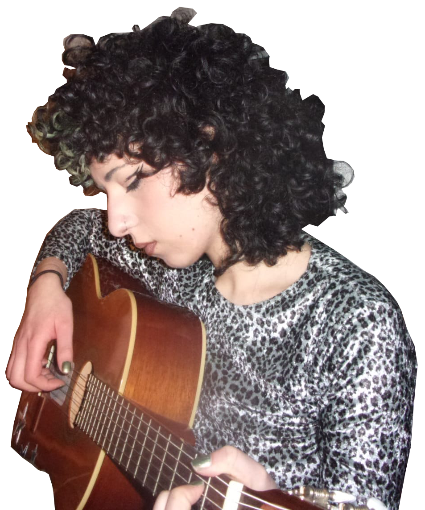
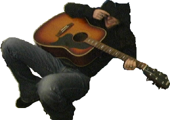

Interprète-autrice-compositrice autodidacte, Azhar porte bien son nom. Sa philosophie? Laisser les inspirations aller et venir à leur guise. Les idées ont leur volonté propre, et il n'y a qu'en suivant leurs mouvements que l'on peut débloquer son réel potentiel créatif. Azhar vous encouragera à développer une pratique légère et agréable de la guitare. Celà reste un instrument, après tout, pas un dogme.

Diplomée du Berklee college of music, Lucile est beaucoup plus proche de l'académisme que ses compères. On ne compte plus ses certifications et ses prix dûs à son niveau de jeu stratosphérique. C'est simple, Lucile vous ouvrira toutes les portes. Avec elle rien n'est impossible, il n'y a qu'à demander, puis à écouter.
Ce mec est dangereux. Ne le laissez pas s'approcher de vous, sous aucun prétexte, on raconte que la dernière personne l'ayant cotoyé a fini par recevoir un grammy.
Il semble effectivement que ce soit l'effet procuré par Ismaël: producteur dans l'âme, son approche de la guitare se fait par la composition.
C'est simple: un instrument, c'est un outil pour générer et appliquer des idées. La technique est un chemin, pas un objectif, et au fil de ce chemin, on trouve les clés qui nous donnent accès à l'artiste que l'on souhaite vraiment devenir.